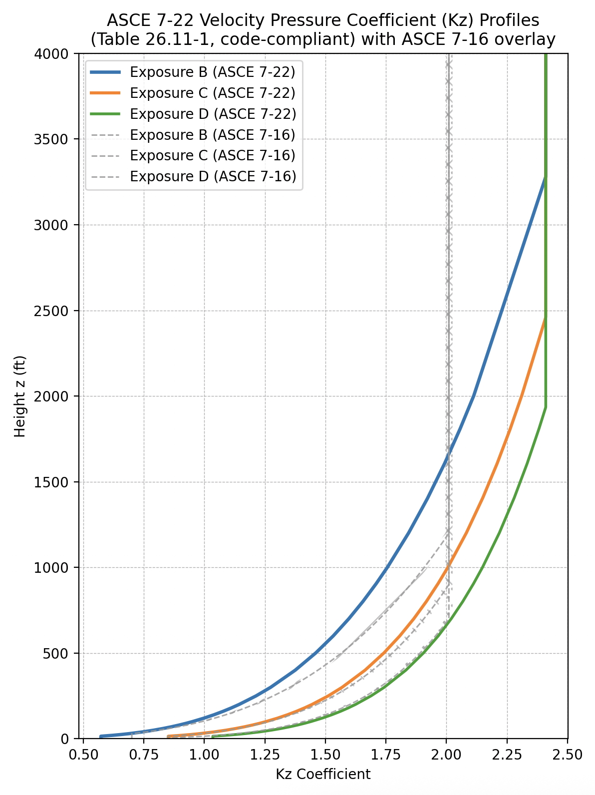
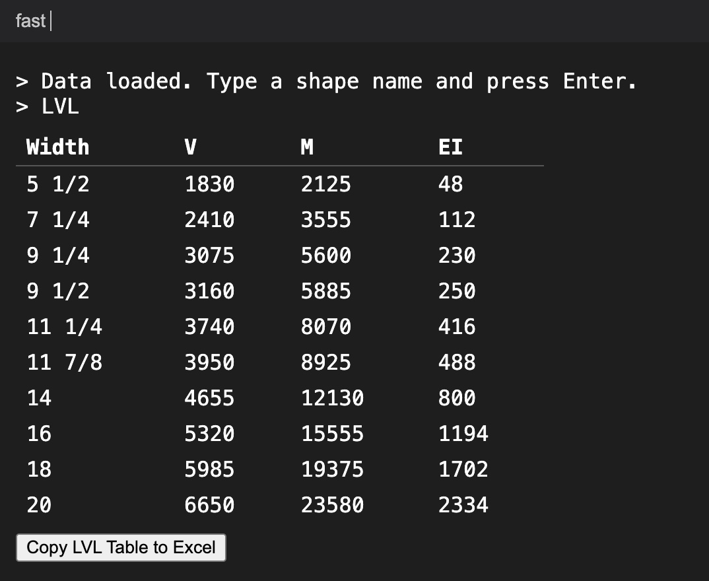
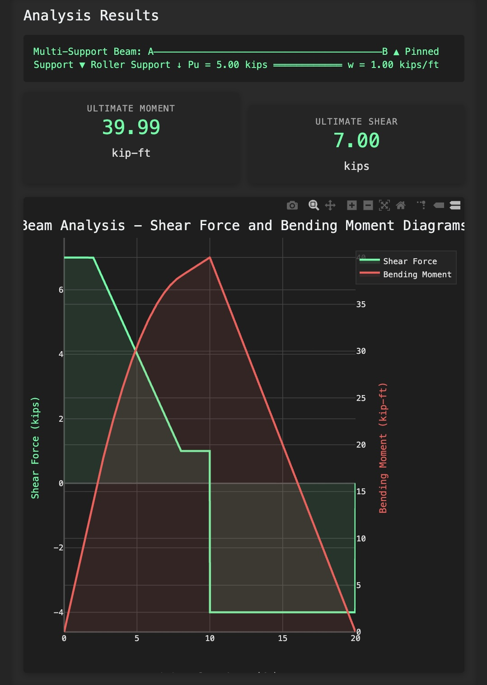

Kafka DesignStructural Eng Tools |
Version | v0.1.1 | |
|---|---|---|---|
| Updated | |||
| Author | Gabriel Kafka | License | MIT |
Pulled from ASCE7-22 CH26 Mostly wind ingredients
Useful plot of Kz profile. 
Give it a try, especially useful for very large doubly reinforced beams BEAM DESIGN
ASCE7 CH28 Low Rise Wind Load Calculator Kaggle
I’ve made this so I/we never have to do a moment distribuition by hand again. Moment Distribuition Killer
Bloomberg Terminal for Structural Engineers. It doesn’t exist but it should. Structural Terminal Link 
This one is rough but its funny how often I find myself using it Structural Analysis Link 
The full source code is here: github.com/owickstrom/the-monospace-web